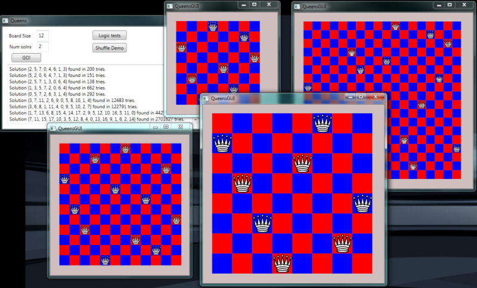
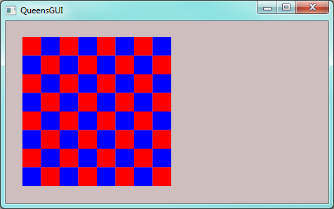
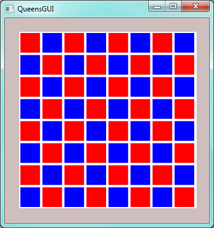
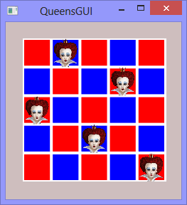

25. GUIs for our Queens¶
We solved the N-Queens problem in an earlier chapter. Now we’d like to draw the boards for the solutions as we find them.
This chapter also takes us quite a bit deeper into WPF: we’ll learn how to have and manage more than one window in our application, and we’ll learn how to create visual controls in those windows from our C# code, rather than the usual way — from the XAML or the Designer in Visual Studio.
Along the way, our two underlying agendas remain:
- To become more familiar with objects: how we create and manipulate them, their states, their properties, their events, their lifetimes, etc.
- To build our algorithmic skills with loops, arrays, conditionals, and events.
In our earlier N-Queens puzzle-solver each solution was represented as an array of ints, like this: [6, 4, 2, 0, 5, 7, 1, 3].
Our goal now is to create a new window for each solution, and draw the boards, like this screen shot which shows two solutions for 8x8 boards, one for a 12x12 case, and one for an 18x18 case.
The 8x8 board consists of 64 rectangle objects that are placed and positioned on a canvas. Then we place 8 image objects on the canvas too, to draw the eight queens.
We can’t do this statically in the XAML because we don’t know ahead of time how big the board is going to be, or where the queen images need to be placed. So the correct number of rectangles and queens, and their sizes and positions can only be determined dynamically (while the program is running) — i.e. we’re going to have to write some loops in our code to create these objects as each solution is found.
Like our previous canvas objects, we’ll also make this canvas stretch when the window is resized. So whenever the canvas changes size, we’ll have to recompute and adjust the positions and the sizes of all the rectangles and all the queens. Take another look at the picture above: one 8x8 board is a lot bigger than the other 8x8 board, because we resized its window. That means its rectangles and queens need to be bigger, and positioned differently.
25.1. Creating a new window for each queens solution¶
We have a solver that already finds solutions in one class — the code behind
our main window. We now want a second type of window, which we’ll call the QueensGUI.
Some of the sub-problems we need to solve now are:
- How does our main window instantiate (create) and show a new
QueensGUIobject? - How do we pass the board that we want drawn from the solver to the newly created
QueensGUIobject? - Within a
QueensGUIobject, how do we create the Rectangle and Image objects, and keep track of them? - Within a
QueensGUIobject, how do we lay out all the rectangles and images in their correct positions, with their optimal sizes?
To create a new Window class in our project we use Visual Studio, right-click on the
project name in our Solution Explorer, and choose Add, and then choose Window. It will ask
for the name for our new type — let’s call it QueensGUI. Visual Studio will
create the class, and open the familiar XAML designer for our window. At this stage, we
can drag on a canvas (which we’ll name canvas1. We’ll also set some properties to make the
canvas stretch when the window is resized.
This is the first time we’ve had more than one window class in a WPF program. WPF has a setting in one of the XAML files that tells it which window to instantiate and open when the application first starts running.
If we look at the XAML, we’ll see the canvas is nested within a Grid — we’ll give the
grid a nice background colour, and give the canvas a different colour, and leave
some border around the canvas so that it is visually easy to separate the two components.
Instantiating a new QueensGUI window (and showing it) is just a few lines of code. You’ll put this code into your previous Queens solver so that after we’ve displayed the textual solution, we also create a new window. The changes are highlighted below:
Line 18 creates a new QueensGUI window object in memory. At this point the GUI is not shown — the Window exists only in memory. Line 20 makes the window visible on our screen.
Line 19 can be left out, but it impacts the lifetime of the new child window.
It sets the new window’s parent window reference to the solver’s window. What this
means is that if the parent window is closed, all its children windows will automatically
close too. Without line 19, the children windows will remain open even after the parent
is closed, and you’ll have to close every window manually before your application terminates.
So we began with a queens solver from Chapter 20. But now, each time it finds a solution, it opens a new child window. So let’s get on with making each child window do something more interesting.
25.2. Drawing the Board¶
The child window needs to know what board (with Queens) it is trying to draw, so our next step is to pass the board array from the parent solver to the new child. On line 18 in the code above we call the window’s constructor. We’ve seen before with the Turtle class and the Random class that we can pass arguments to a constructor when the object is created. So that’s what we’ll do: change line 18 in the code above to send in a (reference to) our board array:
The compiler will now give an error because our constructor doesn’t expect an argument, so now it is time to dive into the code behind the QueensGUI window and change the constructor.
Remember that the role of a constructor in a class is to set the new object up to its factory default settings when each new object is created. So it is time to think about “what needs to be in this new class, what should it do, and how should it do that?”.
When a new QueensGUI object is created, it should
- Save N, the size of the board (e.g. 8 for an 8x8 board) in a class-level variable.
- Create the required NxN Rectangle objects, and give them alternating colours, and place
them on
canvas1. (At this stage we won’t worry about sizes or positions — we’ll defer the layout until later, after the window is shown, when we know how big the canvas is.) - We will need to keep track of the Rectangles, so each time we create one we’ll store a reference to it into an List of rows. We’ll later want to run a loop over every rectangle and fix its position and size. Since the board is always going to be a two-dimensional square board, we’ll use a List of List of Rectangles.
- We’ll also need to create and keep track of the Queen images. Here we’ll just use a List of Image, each holding a reference to an Image control that shows one of the queens.
Some code then: the first few lines of our QueensGUI class are going to look like this:
Lines 3-6 define some private class-level member variables: they’ll live as long as the QueensGUI window remains open. We remind ourselves that defining a variable that can hold a reference to a list does not actually create that list. That must be done separately.
Lines 5 and 11 are an important technique that we’ll often see and use when
writing our own classes. The values contained in the parameter board are passed
as the arguments for the constructor when it is called. But board is local to
the constructor, not visible to the other methods. So we define a
variable at line 5, and at line 11 we save our parameter by copying
it into the variable (it is a reference to an array in this case).
This can now be accessed from other methods in the class.
At lines 13 and 14 we’ll call on some other (private) methods to create our Rectangles
and Queens. Notice that rects is defined as a reference to a List of Lists.
We’ll have to bear that in mind when we create and lay out the rectangles.
Now let’s write the method to create all those rectangle objects.
We’ll create an initially empty List of rows. Then a nested loop will
create one row at a time, and add it to our List of rows.
While we do this we’ll also need to set some properties for each rectangle,
(particularly the brush that will set its colour), we’ll need to remember to
add each rectangle as a child of canvas1 as seen in line 15 (so that canvas1 knows
to paint all its children when we need to draw the board):
Every time we execute the inner loop body we create a new
Rectangle object, we save its reference into thisRow list, and add it to
the canvas. Line 8 is responsible for making sure each new row starts on
a different colour: whichBrush will always either have the value 0 or 1.
Then, as we move along the row, at line 17, we keep swapping the brush index
to go 0,1,0,1,0,1,0,1 ... So the colours of each block will alternate in each row.
It is quite common practice for programmers to write little stubs for functionality that they intend to provide later. Lines 24-27 are part of this scaffolding: we have to provide a method because we called it from the constructor, but we can leave it empty for the moment as we try to focus on one thing at a time.
25.2.1. Positioning and sizing the rectangles¶
Before we concern ourselves with drawing the queens, let’s get the board drawn. When the window is first created, it has not been shown. Until the window gets shown, Windows won’t compute how things are laid out. So we don’t yet know how big the canvas will be, and can’t decide yet how big to make the rectangles, or where to position them.
After the window is first shown, (or when the user resizes the window), the canvas gets
a SizeChanged event. This is the right time for us to work out where we want each
rectangle to be drawn, and how big it needs to be. And if we put this logic behind this
event, it will automatically recompute whenever the window size changes.
So using the XAML designer we attach a handler to the SizeChanged event, and use it to
call some new methods that we will write to reposition our rectangles (and eventually)
our queens.
We intend to keep the squares properly square. But the user can
resize the window (and the canvas) narrow or higher, (i.e. not square).
In line 9 we find the smaller side of the canvas.
We know the board is NxN, (line 10), so we
can work out rectSz — the width and height that every rectangle should be.
We set each of our rectangles that we created earlier to that size in lines 19 and 20.
Each rectangle is positioned on lines 17 and 18. The distance from the top of the canvas depends on which row the rectangle is in, and the distance from the left depends on its column.
Great, now if we solve an 8x8 board, we’ll get this:
Notice that the board has sized to the smaller of the dimensions — its height, in this case. If we do resize the window we’ll see the board stretching or shrinking.
Here is a fun idea that is a very easy change, and makes the board look a lot nicer. We could make the rectangles slightly smaller than what we computed above, but not change their positions. This would give a small open margin between each, so that they don’t touch each other. The background colour of the canvas would show though the gaps. So here we demonstrate: we’ve set the canvas colour to white, and we change lines 17-20 in the code above like this:
So we’ve made each rectangle 10% smaller in both width and height, and we’ve repositioned each rectangle by 5% of its size. Visually, it is quite impressive what a big difference such a small change makes:
Tiled floors or walls always have “grout” between the tiles, like this!
25.2.2. Adding the Queens¶
A WPF Image control can render an image. Our approach in this section will
be precisely the same as it was for the Rectangle controls, but we’ll
use Image controls instead.
When we instantiate the window, we’ll create N Image controls on the canvas,
and we’ll also keep track of them in a list. Then we’ll
complete the code for the layoutQueens method to position and size
the Image controls correctly.
We’ll also need a picture for our queens which we’ll add to our project (as we did earlier with the bouncing ball, in the “More Event Handling” chapter). You might want to click and save one of these images, or find one of your own.
Here then is the code to create the N Image controls, and give them all the same picture. Notice that this method was already called earlier by the constructor for the Window.
The final tweak we need to make is to position and size each Image control correctly.
And here’s one solution for a 5x5 board:
At this stage you can go back and generate multiple solutions for different size boards: each solution should display in its own window that is resizeable.
25.3. Can we see all the interim boards as the solver tries each shuffle?¶
Let’s go back to the code for findQueensSolution which was at the top of this
chapter. We did a search, and once we found a solution we created a window and
displayed the solution. But another plan could be to create the Window and the
board when we start the search, and as we try every new shuffling of the board,
we could rearrange the queens so that they displayed every shuffling.
We’ll need one new (public) method called RefreshQueenPositions in the GUI
class, and we’ll make a small change to findQueensSolution:
There is one critically important aspect of this code that we must understand.
In line 7, when we passed the array bd to the constructor for the new window, we passed a
reference to the array, not its values. Our new QueensGUI object stored that reference
into one of its own variables. But there is still only one underlying array, with more than one
reference pointing to it. So the array is aliased. When we shuffle the array here on line 14,
it means that the QueensGUI object has a reference to the newly shuffled array. So our call in
line 15 will use the latest shuffling to position the queen images.
Let us write RefreshQueenPositions in the QueensGUI class like this:
Line 3 recomputes all positions and sizes of the Image controls, on the basis of the permutation that is currently in the shuffled array.
Line 4 is a messy workaround that we’ll need, but we won’t need to understand it in too much detail. When WPF changes something related to the GUI, it creates a task that says “I must remember to redraw the screen at some future time”. This gets put in a “tasks to be done” queue with other tasks that it might have waiting (for example, responding to a click event on a button, responding to a timer tick event, etc.). It gives top priority to tasks that run the user’s code, and only when it becomes idle, will it go back and do the work from the task queue.
Unfortunately for us, WPF doesn’t think that updating the screen is important: so it postpones the work as a “future task to be done later when I have nothing better to do”.
Line 4 forces WPF to re-prioritize things. It effectively says (with some weird syntax) “pause here until you have cleared your backlog of work in your task queue”. So it draws the screen before it starts the search for the next possible permutation.
With these changes in place you can watch as the algorithm tries every shuffle.
25.4. Key Ideas¶
- We’ve shown how to work with multiple windows in our programs.
- As each new window is created, we’ve created WPF controls and set properties from our own code, rather than from the XAML or Visual Studio’s designer.
- We’ve written a handler for the canvas’
SizeChangedevent, and done our own layout of all the rectangles and images. - We’ve passed information from the parent window to the child window by calling the constructor with an argument.
- The constructor has saved that information, and saved all the Rectangles and Queen references into class-level variables. This ensures that they will live while the Window lives, and that they’ll be accessible to the other methods of the class.
25.5. Exercises¶
- The
QueensGUIclass doesn’t really have much interesting internal state or behaviour yet, apart from being able to resize itself. Add a keyboard handler so that each time the F2 key is pressed the board gets a different colour scheme. Provide at least three colour schemes, and cycle through them if the user repeatedly pushes the F2 key. - Add some logic so that the caller can pass in the two brushes for painting the rectangles.
- Experiment with different kinds of brushes. A good hint is to
look up help for
System.Windows.Media.Brushand expand its inheritance hierarchy to see what specific kinds of brushes are available. For example, one could try aRadialGradientBrush. - Drawing the screen is quite slow which is why WPF made it “low priority”. So in the last section of this chapter we got it to draw a lot. Run some timing experiments to estimate how many tries per second our solver can do a) if it is not having to update the GUI on each try, and b) if it is. Try the experiment for different size boards, and for windows that are stretched big, or made small.